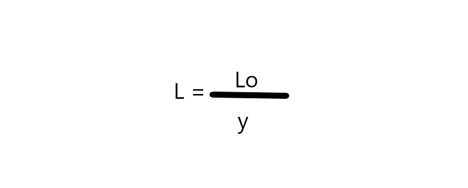
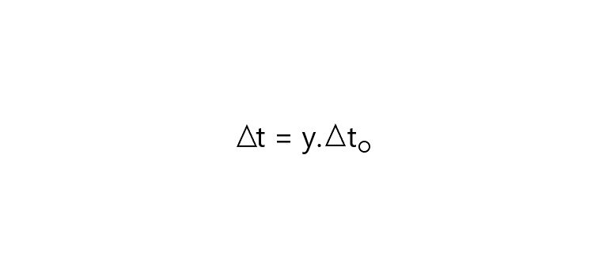
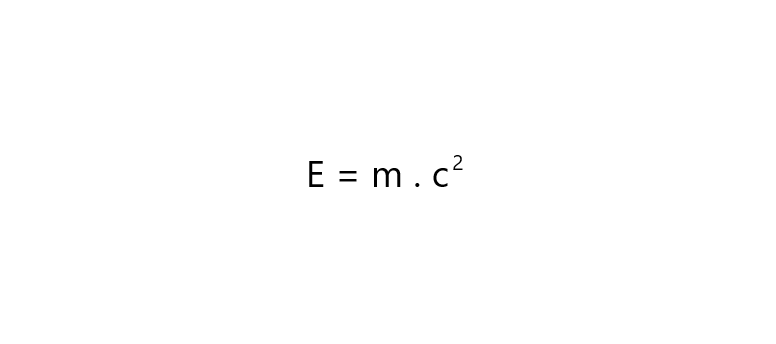

A teoria da relatividade restrita, também chamada de teoria da relatividade especial,foi publicada em 1905 pelo cientista Albert Einstein, esta teoria fala sobre a invariabilidade da velocidade da luz no vácuo e da inexistência de um referencial inercial absoluto.
Postulados da teoria da relatividade restrita, são eles:
1-Princípio da relatividade restrita: “As Leis da Física são as mesmas para todos os observadores em todos os referenciais inerciais. Não existe um referencial inercial absoluto.”
2-Princípio de constância da velocidade da luz: “A velocidade da luz no vácuo tem o mesmo valor (c) em todas as direções e em todos os referenciais inerciais.”
Conclusões da Teoria da Relatividade Restrita :
→ O limite de qualquer de velocidade de qualquer corpo que se desloca no vácuo é a velocidade da Luz
→ A confirmação de que o éter não existe (meio que supostamente envolveria o espaço).
→ A reformulação do conceito de simultaneidade de eventos, que passa a ser relativa à observação de dois observadores que estão em referenciais diferentes, passando a ser chamado de princípio da simultaneidade.
Por meio do princípio da simultaneidade, o tempo e o espaço passam a se comportar de forma relativa um com o outro, de maneira que o observador que se move a uma velocidade próxima à da luz percebe que o tempo passou mais rápido e a distância diminuiu em comparação ao referencial do observador externo, ocorrendo, então, a dilatação do tempo e a contração da distância.
Fórmulas da Teoria da Relatividade Restrita
→ Contração do comprimento
Lo é a distância ou comprimento do corpo em repouso.
L é a distância ou comprimento do corpo em movimento.
γ é o fator de Lorentz.
→ Dilatação do tempo
Δt é o tempo em que o corpo esteve em movimento.
γ é o fator de Lorentz.
Δt0 é o tempo em que o corpo permanece parado.
→ Relação Geral entre massa e energia
E é a energia medida em Joule (J) de uma ou mais particulas.
m é a massa medida em Kg de uma ou mais particulas.
c é a velocidade da luz no vácuo.